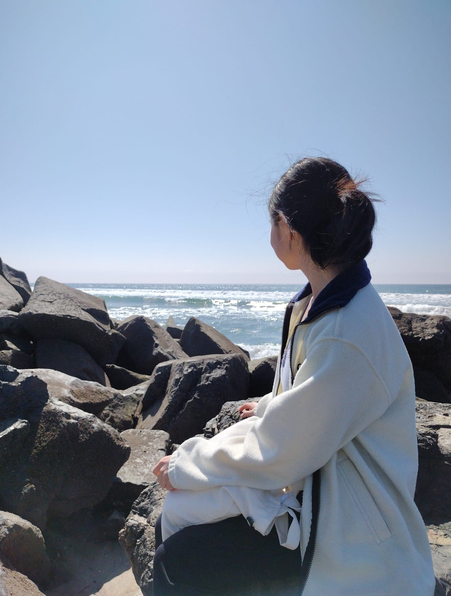
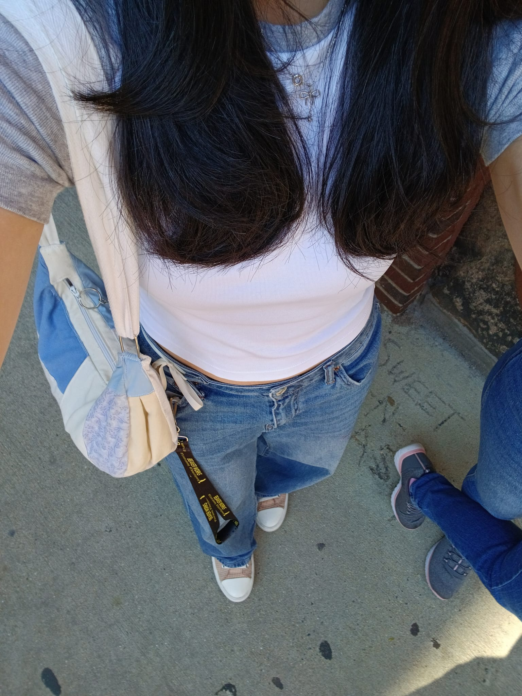

wanna know more about me?
you've come to the right place!



yep, that's me on the left.
well to start off, here's some basic information about me:
- i am a rising high school senior (class of 2026)
- i'm in MA (yes, the state of the american revolution 🦅🦅🦅🦅🦅)
- i'm born and raised in the US, but my parents are from HK, so i speak cantonese at home
- siblings: 🙅♀️. pets: 🙅♀️. but i would like to have a cat and/or dog when i'm older.
recent activities
- almost complete with Girls Who Code's Pathways (2025) program! i've finished the Cybersecurity and Data Science + AI tracks' courses, and this personal website is in fact the first course in the Web Development track.
- just completed MIT's Beaver Works Summer Institute (2025)! Took the Serious Games Development with AI course, and learned a lot of things about coding :) (lost a lot of sleep in the process though...)
- barely surviving my AP summer work (best example of that is AP Chinese... because my chinese teacher wants us to do 6 separate assignments 🫠
interesting tidbits about me
oh and yes this is the same as the info on my homepage, but not in java form :)
- i do taekwondo recreationally, and i'm a purple belt.
- one of my hobbies is fiber arts (which includes crocheting, knitting, and sewing. i like to call it the "trifecta" of fiber arts lol. you can check out some of my stuff on my fiber arts portfolio page!
- the goal is to go into computational biology. obviously this isn't the most widespread major, if a school i'm applying to doesn't have it, i'll double major biology and computer science.
- i wouldn't say i'm the most avid linguist, but i speak english, cantonese (at home), mandarin (from school).
- and then for coding, i'm most familiar with java (thank you ap csa), python (bwsi and girls who code), html, css (obviously, since i am making a website with the languages after all)
- and of course, i had to struggle with unity for a good while in bwsi and so i can say i'm 10% good at c#. mostly (entirely) because of java though.
⋘ loading... ⋙